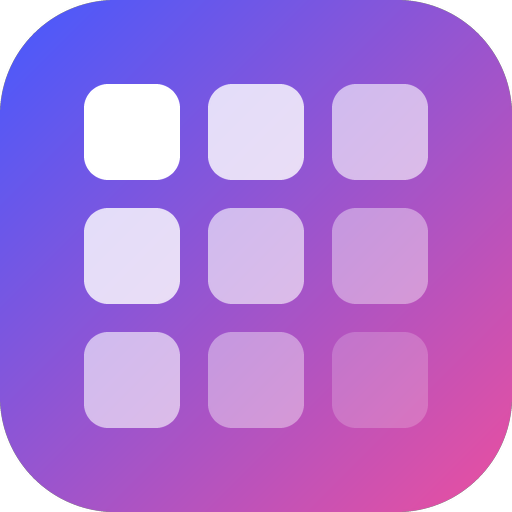
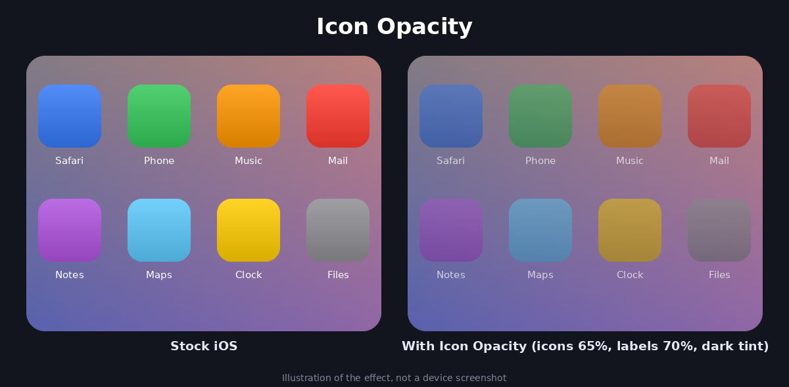

Icon Opacity
Прозрачные иконки и подписи на рабочем столе, цветной слой поверх иконок и предпросмотр прямо в настройках.
iOS 12
Jailbreak tweak
Бесплатно
Адрес репозитория
Если кнопки выше не открывают менеджер пакетов, скопируй адрес и добавь его вручную: Sileo → Источники → «+».
Возможности
- Прозрачность иконок от 0.1 до 1.0
- Отдельная прозрачность подписей под иконками
- Цветной слой: красный, зелёный, синий и его прозрачность
- Предпросмотр на иконке Safari в настройках
- Изменения применяются сразу, без ресинга
Как выглядит эффект

Иллюстрация эффекта, а не скриншот с устройства.
Установка
- Нажми «Добавить в Sileo» или добавь адрес репозитория вручную.
- Найди Icon Opacity и установи.
- Открой Настройки → Icon Opacity и двигай ползунки.
Нужны PreferenceLoader и MobileSubstrate (обычно уже стоят вместе с джейлбрейком). Проверено на iPhone 6, iOS 12.5.8.